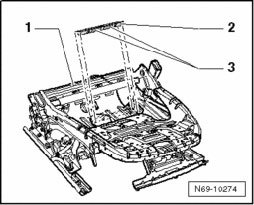
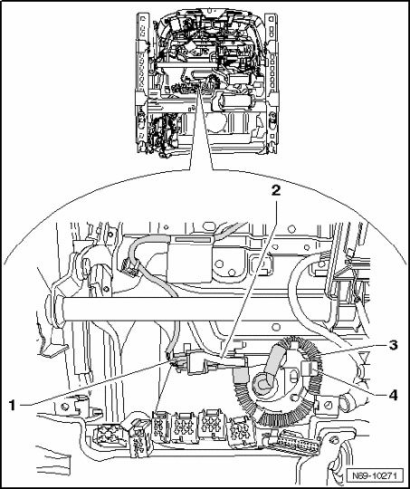

Passenger Occupant Detection System (PODS) (USA Only) Repair Set, Vehicles With Power Seat Adjustment, Installing
Passenger Occupant Detection System (PODS) (USA Only) Repair Set, Vehicles With Power Seat Adjustment, Installing
NOTE:
- When installing, there must be no wiring harness of seat heater between upholstery and mat for seat occupied recognition.
- Pressure hose must be routed without kinking.
- Stickers with notes on harness connectors must not be damaged.
- After vehicle was connected to electrical system, check replaced components for freedom of movement by moving seat.
After replacing seat occupied recognition, basic setting of seat occupied recognition must be performed using diagnostic tester containing "Guided Fault Finding".
CAUTION: Basic setting must be performed when seat is not occupied.
Installation is reverse of removal, noting the following:

- Secure insertion profile -2- with double-sided tape -3- on seat frame -1- as shown.
- Bracket -4- can rotate slightly during removal and installation. Position bracket as shown in installation position in front of pressure hose fastener -3-.
CAUTION: Do not damage seals when assembling or disassembling.

- Switch on ignition.

CAUTION: Make sure that no persons are in the vehicle.
- Connect vehicle battery.